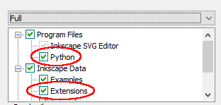

Make sure that Inkscape 1.4 is installed on your system and you checked
the Python option in ProgramFiles as well as the Extensions options in
InkscapeData during the installation of Inkscape (by default this is the case).

Make sure that an operational LaTeX distribution is installed on your system. You can verify
this by invoking at least one of pdflatex--version, xelatex--version,
lualatex--version, and typst--version in a command or power shell window.
Warning
Make sure that automatic package installation is either set to
Neverinstallmissingpackageson-the-fly or set to
Alwaysinstallmissingpackageson-the-fly. You can configure this
feature during installation of MiKTeX or later in the MiKTeX console.
Optional: If you wish to have syntax highlighting and some other nice features
enabled in the TexText-Gui install GtkSourceView. For that purpose download the GtkSourceView package
that matches your Inkscape installation type
and run the corresponding installer. It will add a small amount of files into your Inkscape 1.4
installation. You need administrator privileges for this step. If you do not trust the installer
you will find zip packages on the GtkSourceView for Inkscape project site
for manual installation.
Important
Compared to previous versions TexText does not need any conversion utilities like ghostscript,
pstoedit or pdfsvg. Furthermore, the required Python bindings for the GTK3-GUI
are already included in the windows version of Inkscape 1.4.
Extract the package and change into the created directory.
Double click on the file setup_win.bat. The script will check if all requirements
described above are met. If so, it will install the extension
files into the user’s Inkscape configuration directory (usually this is
%USERPROFILE%\AppData\Roaming\Inkscape).
Use the installer and follow the instructions. It will copy the required files into the user’s Inkscape
configuration directory (usually this is %USERPROFILE%\AppData\Roaming\Inkscape).
Note
The installer does not perform any requirement checks. This means that the extension might
fail to run if you did not install the programs mentioned
above correctly.
The GUI framework should already be included in the Inkscape installation on Windows.
Hence, if the TexText installer complains about missing GTK3 or TkInter bindings
please file a bug report on github
Extract the package and change into the created directory.
Open a Windows command prompt or Windows power shell window in this directory
(SHIFT + right-click in the Windows explorer, then select Open powershell window here)
Enter and execute the following command where C:\Path\To\Your\PartableApps\Installation
is the path to your PortableApps installation (usually this is C:\User\YourUserName\PortableApps):